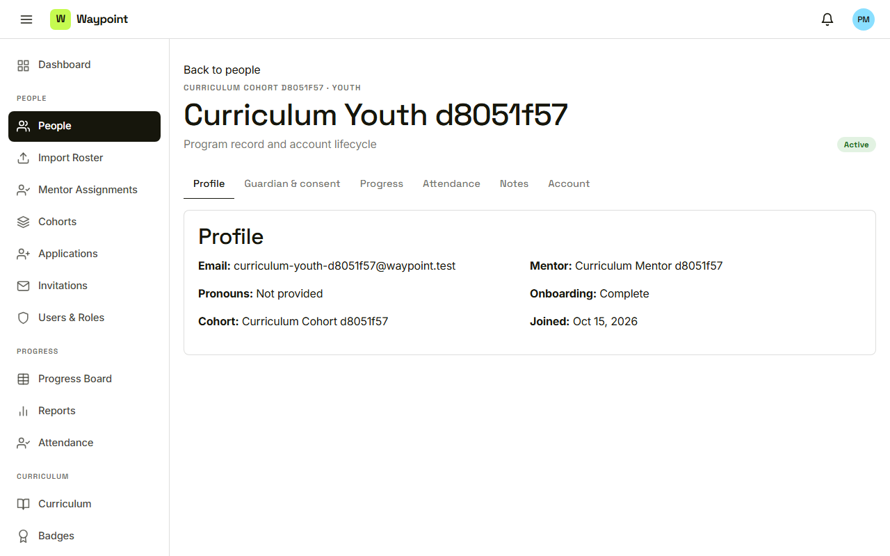
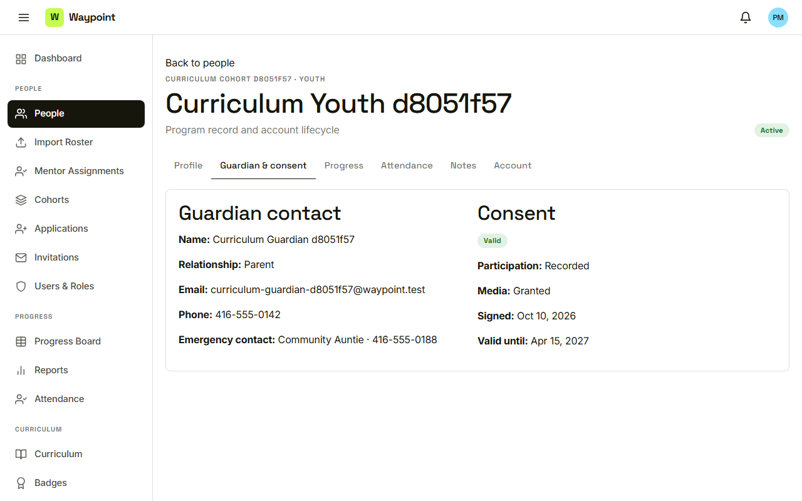
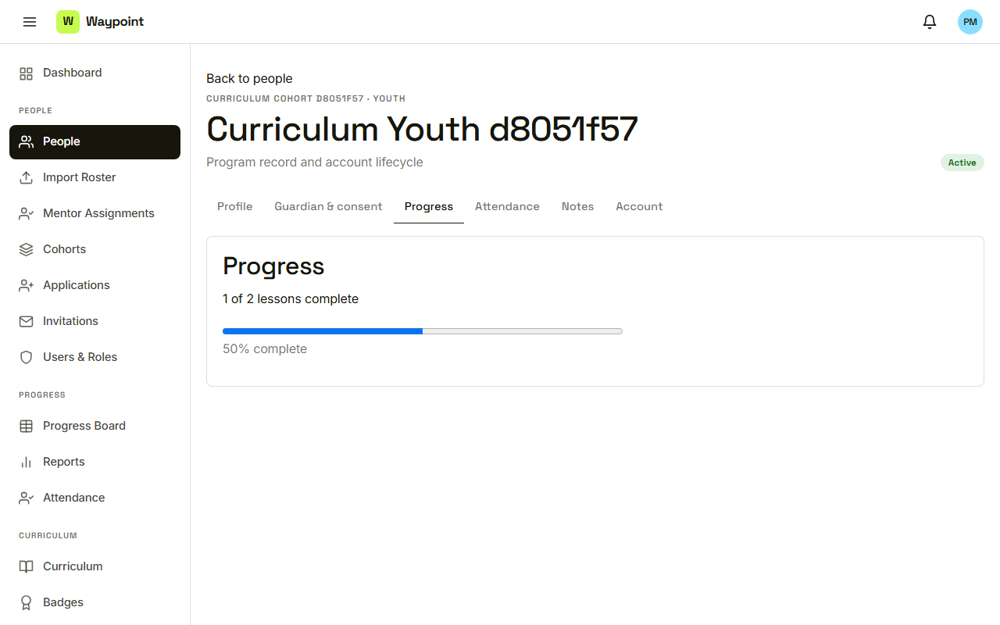
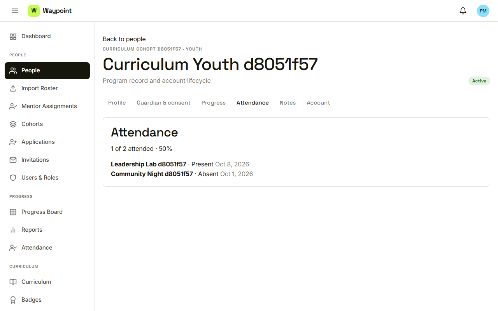
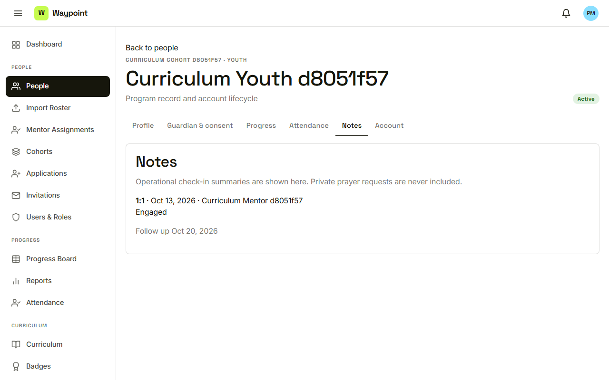

Waypoint · Video 030
A person's record
Six tabs, one record
Six tabs

Profile, with five more tabs
Guardian and consent

Guardian contact, and the consent record
Progress

One of two lessons complete
Attendance

Present and Absent sessions
Notes, without private requests

Private prayer requests are never included
Things to remember
Profile, Guardian and consent, Progress, Attendance, Notes, Account
Consent and guardian contact on the same record
Notes are summaries only
Private prayer requests are never shown